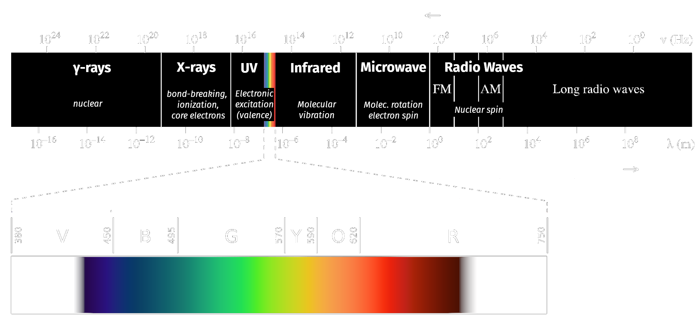

layout: true --- <h2 style = "text-align: right; font-weight: bold;">7.1.1</h2> <h1 style = "text-align: left; font-weight: bold; margin-left: 40px;">UV-vis Spectoscopy</h1> <h3 style = "text-align: left; font-weight: bold; margin-left: 40px;">Molecular Origins of Absorption</h3> <h5 style = "text-align: left; font-weight: bold; margin-left: 40px;">Granger 6.1-6.2</h5> --- class: left <div style="margin-top: 100px;"></div> > **Spectroscopy:** The study of interactions between ***light*** and ***matter***. <!-- class: left <div style="margin-top: 150px;"></div> ## What is light? --> --- class: center UV-vis probes electronic transitions between molecular orbitals.  .image-credit[Adapted from work by [Philip Ronan, Gringer](https://commons.wikimedia.org/wiki/File:EM_spectrumrevised.png) / [CC BY-SA](https://creativecommons.org/licenses/by-sa/3.0)] --- class: center A UV-vis **spectrum** has $\lambda$ as $x$ and absorbance as $y$. Each peak represents a transition.  .image-credit[Pavan M.V. Raja and Andrew R. Barron / [Chem Libre Texts](https://chem.libretexts.org/Bookshelves/Analytical_Chemistry/Book%3A_Physical_Methods_in_Chemistry_and_Nano_Science_%28Barron%29/04%3A_Chemical_Speciation/4.04%3A_UV-Visible_Spectroscopy) / [CC BY-SA 3.0](https://creativecommons.org/licenses/by-sa/3.0/at/deed.en)] --- class: center <h2 style = "text-align: right; font-weight: bold;">7.1.2</h2>  .image-credit[David Harvey / [Analytical Chemistry 2.1](https://chem.libretexts.org/Bookshelves/Analytical_Chemistry/Book%3A_Analytical_Chemistry_2.1_%28Harvey%29) / [CC BY-SA 4.0](https://creativecommons.org/licenses/by-sa/3.0/at/deed.en)] --- class: center Light is absorbed *only* if $hv$ equals an energy difference between quantized molecular orbitals. .image-credit[David Harvey / [Analytical Chemistry 2.1](https://chem.libretexts.org/Bookshelves/Analytical_Chemistry/Book%3A_Analytical_Chemistry_2.1_%28Harvey%29) / [CC BY-SA 4.0](https://creativecommons.org/licenses/by-sa/3.0/at/deed.en)] --- <h2 style = "text-align: right; font-weight: bold;">7.2.1</h2> <h1 style = "text-align: left; font-weight: bold; margin-left: 40px;">Quantitative</h1> <h1 style = "text-align: left; font-weight: bold; margin-left: 40px;">UV-vis</h1> <h3 style = "text-align: left; font-weight: bold; margin-left: 40px;">Beer's Law</h3> <h5 style = "text-align: left; font-weight: bold; margin-left: 40px;">Granger 6.3</h5> <!-- =============================================================================== -->